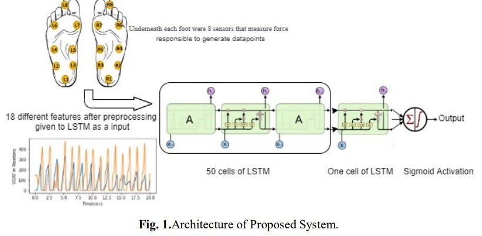
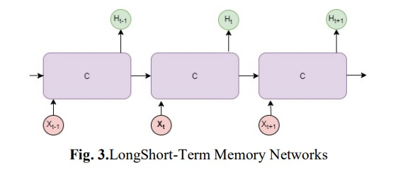
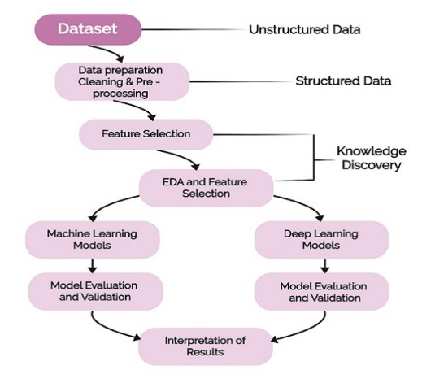
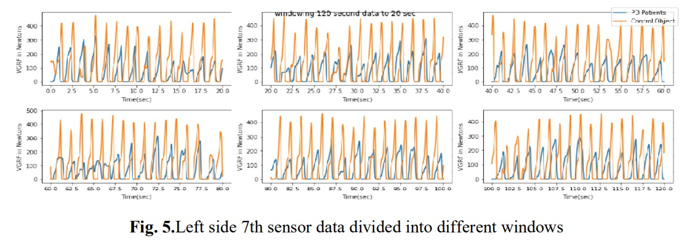
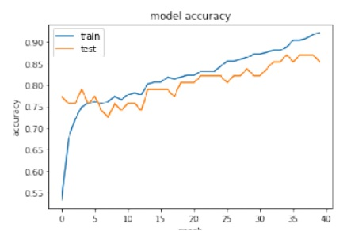
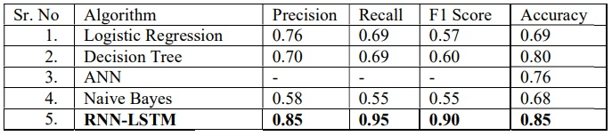

Early diagnosis of Parkinson’s disease using LSTM: A Deep Learning Approach.
Project information
Parkinson's disease (PD) is one of the most rapidly growing neurodegenerative diseases in the world. Due to motor symptoms, it affects the normal life of a person. There is a severe need to identify PD in its early stage to avoid it getting worse and to control its symptoms easily. The advancements in Artificial Intelligence (AI) and the Internet of Things (IoT) open up new avenues for the analysis of various data points such as the gait of a person for early-stage detection. In this paper, we propose a methodology based on the use of Long Short-Term Memory (LSTM) architecture for PD diagnosis. We have used time series analysis to find the gait patterns and deep learning techniques to extract the features and to build a classifier model. The proposed model is predicting the PD disease with 85% testing accuracy and with an F1 score of 0.90. The validation is performed using Cohen's Kappa statistical method and obtained a score of 0.631.
Problem Statement
Common movement disorders like Parkinson’s and Huntington's disease are caused due to illnesses that involve the death of certain parts of the brain. Almost 30% of people across the globe are facing this neurodegenerative incurable disease.
It is one of the primary public health diseases in the globe that is severely rising day by day and has its effect on many countries. Symptoms are categorized into Motor symptoms and non-Motor Symptoms. In Motor symptoms, voluntary actions are involved. It indicates movement-related disorders such as tremor, rigidity, freezing, or any voluntary muscle movement. Non-motor symptoms include disorders of mood and affect apathy, cognitive dysfunction like memory loss as well as complex behavioural disorders. 2 The use of Artificial Intelligence (AI) to find symptoms of PD in its early stages is of current interest for many researchers. Generally, medical doctors screen various questionnaires to detect PD symptoms and check the severity of the same. It is observed that there were major differences between responses from individuals in two groups, normal and affected. This makes the overall process time-consuming with discrepancies of questionnaires.
Proposed solution
The main goal of this project is to explore the use of different machine learning and deep learning algorithms that process raw data obtained from various sensors placed in the shoes’ sole and to predict parkinsonism by analysing the gait data. We propose a methodology that uses the Recurrent Neural Network (RNN) Long Short-Term Memory (LSTM), a deep learning algorithm for the early detection of PD.
In our proposed system, we have used the LSTM Network, a special type of RNN for the prediction of PD. LSTM learns from raw data coming from sensors and finds the important features directly. It is responsible for detecting deep features with respect to the input. It also handles multiple inputs parallelly.
The architecture of the Proposed System
The proposed methodology for predicting PD using deep learning is shown in Fig. 1. In the first step, the gait data of various subjects have been collected using sensors. There were 8 sensors placed underneath each foot and generated gait data stored in .csv file. The collected data is standardized by removing the mean and scaling to unit variance. By considering the sequences of data, time steps have been generated. In the next step, RNN is designed with an input layer, a hidden layer with 50 LSTM cells, and an output layer. The number of neurons in the input layer is fixed as the number of attributes in the input data. One sample is processed at a time, at time step 1, all 50 cells would get the first-time step of data with all 18 features. The output layer contains two neurons corresponding to the two classes – “normal” and “PD”. The standardized data is given into the formed RNN for training and validation.
The system shown in Fig. 1 takes 18 different features as input to RNN-LSTM with den layers. We applied a multivariate sliding windowing method of time series analysis to find features that were further given as input to LSTM for analysis. RNN LSTM takes preprocessed data and analyzes different patterns in the same. Combining different results in a single vector using a fully connected layer as the output will subject 0 as normal and 1 as a PD patient. RNN is a type of neural network in which the output of a layer is fed back to the input layer multiple times in order to learn from the past data.

In Fig. 2, C is a cell looking for input Xt and gives the output as Ht. A close loop allows data to be passed from one cell to another. Here, each cell transfers a message or data to a successor. LSTM [11] can learn long-term dependencies in data, which is useful to find patterns.
In Fig. 3, each arrow carries an entire vector from the input of one cell ‘C’ to the output of another. Every LSTM cell has its cell state that carries filtered information from one cell to another. LSTM can add or remove data to the cell state using gates. Each gate consists of a sigmoid neural net layer, which gives the output as 0 or 1 based on the information. In the next stage, the new information that has to be added to the cell state is decided. In this step, the tanh layer creates a vector of new values. In the third stage, we combine both stages to update the cell state.
Next, we update the old cell state to the new state. In the end, we decide the output based on the combined cell state.We have also tried machine learning classification algorithms such as Logistic Regression, ANN, Decision Tree and Naive Bayes algorithms. Logistic regression is a classification algorithm based on probability, generally used for binary classification. It is based on sigmoid cost function [12].
ANN is the network of functions(units) connected with weight to analyze the new data and detect the patterns that are used for classification [13]. By learning decision rules inferred from the data features Decision Tree classify the data in different labels [14]. Naive Bayes algorithm uses Bayes theorem that works on conditional probability. It is a highly extensive algorithm used for classification.
Experimental setup
The proposed model is implemented on a system with Intel Core i3 1080Ti GPU at 2.20 GHz and 8 GB RAM. The Python libraries and TensorFlow are used to implement the RNN with LSTM.
Flowgraph
A workflow of the system is shown in Fig. 4. We have extracted the data from the source [12]. In Pre-processing and data cleaning stage, null values, outliers, and distribution of data are checked. Feature Selection stage comprises the filtration of various features that may include or exclude the features as per their importance decided in exploratory data analysis stage. Various machine learning algorithms such as Logistic Regression, Decision Tree and Naive Bayes have been used along with deep learning algorithms like ANN and LSTM. In the last stage accuracies of these algorithms have been compared.
Fig. 4.Flowchart.
Dataset
The dataset contains measures of gait from 93 patients with PD and 73 healthy subjects. The dataset includes the vertical ground reaction force records of subjects as they walked for 2 minutes on level ground. Under each foot, there were 8 sensors that measure the force in Newtons as a function of time. The output of each of these 16 sensors has been recorded at 100 data points per second and the records also include two signals that have the sum of the 8 sensor outputs for each foot [16]. Dataset contains around 70% PD subjects and 30% normal subjects.
Time Series Windowing Method
We have selected an interval of 20 seconds to separate the original data into several consecutive data sets to find patterns that will help our model to understand the data and will predict the result.
Considering only one sensor, here are some plots shown in Fig. 5 that depict the patterns of control and PD subjects. These plots helped us while preparing input to LSTM. Input to every LSTM layer must be in three-dimensions i.e. Samples, Time Steps & Features. Sample is the number of data points; time steps is how many previous sequences and features is the number of columns.
Performance measures
1. Accuracy
Fig. 6.Performance of model during training.
The classification accuracy obtained is 92% and 85% for the train and test dataset respectively. With precision being 0.854167, Recall: 0.953488 and F1 score: 0.901099. The model accuracy graph has been shown in Fig. 6. The graph represents the model performance during training and testing with respect to the number of epochs.
2. Area Under the Curve (AUC) Receiver Operating Characteristics (ROC)
Fig. 7. Receiver Operating Characteristic (ROC) curves of PD patients and for Normal patients obtained when predicting classes using LSTM.
To evaluate the model’s classification performance, we have used AUC that represents a measure of separability, and ROC which is a probability curve. It showcases how much a model is capable of distinguishing between classes. We have obtained 80% ROC AUC confidence, which shows that the classifier is capable to predict classes more accurately (Fig. 7).
3. Cohen’s Kappa statistic
In order to measure inter-rater reliability for quantitative variables, we have used Cohen’s Kappa Statistic. It can be defined as,
k = (Ao-Ae) /(1-Ae) = 1-(1-Ao)/(1-Ae)
where k is Cohen’s Kappa coefficient, Ao is the observed value and Ae is the expected value. As per Landis and Koch machinate [17], the coefficient k is always less than or equal to 1. If the value of k is less than 0 it shows no use of a classifier, 0 to 0.20 is inconsiderable, 0.21 to 0.40 can be considered. Whereas, 0.41 to 0.60 is modest, 0.61 to 0.80 is substantial and 0.81 to 1 is a perfect classifier. Since the dataset is not balanced, Cohen’s Kappa statistic method can be used to evaluate classifiers that handle imbalanced data. The proposed method has given 0.631440 Cohen’s Kappa value. As per the values set by Landis and Koch, the classifier performs well.
4. Parkinson’s disease and control subject classification acy
Fig. 8.Confusion matrix.
The classification accuracy obtained is 92% and 85% for the train and test dataset respectively. With precision being 0.854167, Recall: 0.953488 and F1 score: 0.901099. The model accuracy graph has been shown in Fig. 6. The graph represents the model performance during training and testing with respect to the number of epochs.
5. A learning curve
Fig. 9.Learning Curve Epoch vs Loss.
A learning curve is a plot of model learning performance over time. The number of epochs will be on x-axis and loss will be on the y-axis. Fig. 9 shows that the model is trained correctly and periodically reduces loss after every epoch.
6. Performance measure Comparison
Table 1.Comparative result of different machine learning algorithms.
We have tried various machine learning algorithms and compared their results shown in Table 1. The proposed method performs better than the other methods.
In this project, we have implemented a special type RNN, LSTM and its performance is compared with other machine learning algorithms such as Logistic Regression, Decision Tree, Artificial Neural Network and Naive Bayes. The proposed LSTM model achieved 92% training accuracy and 85% testing accuracy. To validate the model, we have used various performance measures like confusion matrix, ROC and Cohen's Kappa coefficient. The results indicate that our proposed model performs better and is able to detect Parkinson's disease in an early stage in an efficient way.